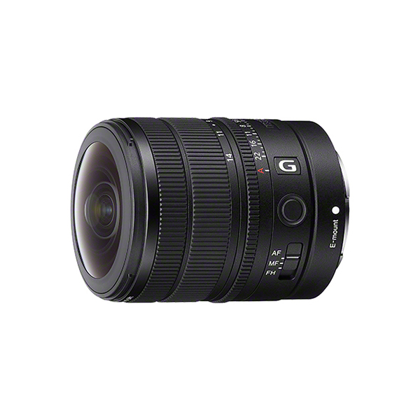

科技產品 T1
 Muse 官方宣傳圖，非本地實測畫面。 Meta，權利歸原權利人
Muse 官方宣傳圖，非本地實測畫面。 Meta，權利歸原權利人
Meta 推出 Muse 個人 AI 代理，在美國開放手機與網頁使用
發佈時間
Meta｜Muse 個人 AI 代理
Muse 從回答問題延伸到代辦任務，先在美國推出；操作權限、安全機制與可用市場需一起看。
- 官方表示美國用戶可透過 iOS、Android 與 muse.ai 使用，也可在 WhatsApp 與 Muse 互動；提供免費用途與訂閱方案。
- Muse 在專屬 Muse Secure VM 執行，另設 Sentinel 檢查對外動作；寄信、購買等敏感操作需向使用者確認。
- Muse Confidential VM 預計今年稍後推出；AI 眼鏡支援仍列為即將到來，不能寫成今天全部可用。
完整報告收合報告
事件背景與影響
個人代理需要處理帳號、付款和持續任務，產品價值不只取決於模型回答品質，也取決於人類核准與稽核是否可靠。這些安全設計目前仍是廠商說明，不代表獨立測試已證實無風險。
事件與發佈依據
Meta 官方公告 datePublished 為 2026-09-08T19:00:51+00:00；本次節點是 Muse 獨立個人代理正式推出，不是較早 Muse Spark 模型更新。
收錄紀錄
首次收錄這項產品變更。歷史命中 2026-08-06 Muse Code beta、2026-08-11 Muse Glimmer／Spark 1.2，皆非本次 Muse 個人代理與專屬 VM 上線。
尚待確認
台灣可用性、訂閱價格及實際任務成功率未由上述公告完整確立；不採用「全球第一」等行銷比較作為已驗證事實。
相關實體與概念
Meta、Muse、Muse Spark、Muse Secure VM、Sentinel、WhatsApp、個人代理、授權與稽核
科技產品 T2

FE 8–14mm F3.5 Fisheye G 官方產品圖。 Sony，權利歸原權利人
Sony 發表 FE 8–14mm F3.5 Fisheye G，日本預定 10 月上市
發佈時間
Sony｜FE 8–14mm F3.5 Fisheye G（SEL814G）
一支全片幅 E 接環鏡頭涵蓋圓周與對角線魚眼，官方同時公布日本預購、上市和參考價格。
- 官方型號為 SEL814G，恆定 F3.5；8mm 為圓周魚眼，14mm 為對角線 180 度魚眼。
- 鏡頭約 314g、長約 82.8mm，採內變焦，最短對焦距離 0.15m。
- 日本預定 9 月 29 日 10 時開始預購、10 月 9 日上市；官方市場預估含稅價格約 26 萬日圓，並非固定零售價。
完整報告收合報告
事件背景與影響
8–14mm 變焦讓創作者可在不同魚眼構圖間切換，小型化也有利於影片與空間影像設備配置。本次重點是具體新品與上市計畫，不是把展覽預告當成已出貨。
事件與發佈依據
Sony 日本 2026-09-08 新商品新聞稿；採首次新品公告日，非未來預購或出貨日。日期完整落在產品 168 小時窗內。
收錄紀錄
首次收錄。搜尋 FE 8-14mm、SEL814G 與 SEL0814G 等變體未命中既有產品變更，再查最近 7 天表亦無相同項目；與 2026-09-08 的 Sony 耳機不同。
尚待確認
日本時程與價格不能直接套用台灣或歐美；實際零售價格由通路決定，畫質與自動對焦表現仍待獨立實測。
相關實體與概念
Sony、Alpha、E 接環、SEL814G、魚眼鏡頭、VENICE Extension System Mini、空間影像
全球焦點 1
 全球新聞主題配圖，非加拿大關稅事件照片。 Unsplash
全球新聞主題配圖，非加拿大關稅事件照片。 Unsplash
續報｜加拿大對約 200 億美元美國商品的反制關稅正式生效
發佈時間
美加貿易爭端進入新一輪實際徵稅，影響由外交表態轉為企業採購與進口成本。
- AP 報導措施涵蓋約 200 億美元美國商品，稅率分為 15%、25% 與 50%。
- 涵蓋鋼鋁、乳酪、家電、服飾、化妝品與農業設備等數百項產品。
- 加拿大稱採金額與稅率對等的回應；本日重點是徵收開始，不是較早的清單公布。
完整報告收合報告
事件背景與影響
兩國供應鏈高度整合，措施即使未必明顯改變美國整體成長，仍可能集中衝擊特定產業。能否促成談判或引發加碼報復，需由後續措施判斷，不能預先宣告任何一方獲勝。
事件與發佈依據
AP datePublished：2026-09-08T04:07:02Z；事件為加拿大 9 月 8 日開始執行已預告的關稅，非舊宣布重新刊登。
收錄紀錄
2026-09-02 日報已在加拿大補選報導中記錄反制措施預定 9 月 8 日實施；今日新增是措施實際生效。
尚待確認
產業負擔、價格轉嫁與談判結果仍不確定；報導中的政治勝負判讀是受訪者意見，不等同經濟結果。
相關實體與概念
加拿大、美國、Mark Carney、Donald Trump、關稅、北美供應鏈
全球焦點 2
續報｜美軍稱再摧毀五艘伊朗油輪，伊朗宣稱攻擊約旦美方目標
發佈時間
美伊把軍事報復再次指向石油運輸資產，雙方說法與現場損失仍需分開驗證。
- 美軍中央司令部稱五艘伊朗油輪遭摧毀，攻擊前通知船員棄船。
- 伊朗國營媒體也報導油輪遇襲及船員撤離，但未逐項獨立證實美方全部戰果。
- 伊朗媒體稱向約旦美方目標發射飛彈；美軍中央司令部當時未提供可確認該攻擊的資訊。
完整報告收合報告
事件背景與影響
航運資產遭反覆打擊可能增加海灣通航、保險和供應風險。此處呈現的是各方已發布的戰果與報復聲明，不能把軍方宣稱直接視為獨立確認的完整損害清單。
事件與發佈依據
AP 首次發布 2026-09-08T20:45:57Z，更新至 23:15:07Z，均在截點前；對象為 9 月 8 日的新一輪油輪打擊。
收錄紀錄
2026-09-06 已記錄三艘油輪遭攻擊，2026-09-08 記錄伊朗飛彈先發準則。今日新增是美方所稱另五艘油輪及伊朗對約旦目標的報復主張，不能與前次船數混算。
尚待確認
船隻損壞程度、傷亡及約旦目標是否命中尚缺獨立確認；不將報導中船位的海域稱呼當作精確航海定位。
相關實體與概念
美軍中央司令部、伊朗、約旦、油輪、荷姆茲海峽、阿曼灣
全球焦點 3
續報｜胡塞攻擊沙烏地南部油設施與公用設施，當局稱 73 人受傷
發佈時間
戰線從葉門西岸地面交戰擴大到沙烏地能源與民用設施，紅海替代運輸路線也面臨壓力。
- 沙烏地聯軍發言人稱 Abha、Jazan、Najran 與 Khamis Mushait 的民用及經濟設施遇襲，73 人受傷。
- 能源部稱部分油設施與公用設施起火、暫停運作；尚未公布完整產能損失。
- 胡塞稱使用數十枚彈道飛彈與無人機，將行動描述為對沙烏地空襲的回應；沙方稱是嚴重升級並揚言反擊。
完整報告收合報告
事件背景與影響
當荷姆茲通航已受限制，沙烏地替代出口路線和南部設施再遭攻擊，可能放大能源供應的不確定性。停運範圍與修復速度比單一油價波動更值得追蹤。
事件與發佈依據
AP 首次發布 2026-09-08T04:02:15Z，更新至 13:05:00Z；事件為 9 月 8 日清晨的新一波沙烏地境內攻擊。
收錄紀錄
2026-09-07 記錄葉門政府軍奪回 Hays 的地面戰。今日新增是跨境攻擊沙烏地多座城市、油設施停運及新的 73 人受傷通報。
尚待確認
傷者數、打擊目標與責任敘事分別來自當局及交戰方；不能推定 Jazan 整座煉油廠已全面停產。
相關實體與概念
胡塞、葉門、沙烏地阿拉伯、Jazan、紅海、曼德海峽、能源設施
全球焦點 4
續報｜英國宣布禁止西岸屯墾區商品與服務往來，以色列提出外交反制
發佈時間
英國把對西岸屯墾區的反對升為貿易政策，法國與加拿大也宣布採取類似行動。
- 英國擬禁止屯墾區商品進口，以及金融、建設、基礎設施、房地產與廣告等相關服務。
- 外相表示貿易禁令需約 6 至 9 個月落實；不宜寫成當天已全面停止往來。
- 以色列表示將關閉英國駐耶路撒冷領事館，並將英方代表逐出加薩停火監督的聯合中心。
完整報告收合報告
事件背景與影響
措施把外交立場轉為企業交易限制，並牽動英以關係與兩國方案。經濟規模和政治影響不能混為一談，也需分清宣布、法制作業與真正執行的時間。
事件與發佈依據
AP 首次發布 2026-09-08T09:09:24Z，更新至 18:18:21Z；基準是英國政府 9 月 8 日正式宣布政策，不是禁令已立即全面生效。
收錄紀錄
2026-06-09 已收錄英國議員推動屯墾區貿易禁令。今日新增是政府正式宣布商品與服務措施，以及以色列提出反制。
尚待確認
英方與以方對措施正當性強烈對立；實施細節及外交反制是否完成須再確認，不能把宣布當成執行完成。
相關實體與概念
英國、以色列、西岸、法國、加拿大、屯墾區、兩國方案、貿易限制
全球焦點 5
續報｜俄軍恢復對基輔空襲，烏方通報首都及周邊七死二十八傷
發佈時間
短暫外交窗口沒有轉成持久停火，空襲再度造成平民傷亡。
- 烏克蘭當局稱基輔及周邊地區共七人死亡、二十八人受傷；報導亦記錄敖德薩方向遭攻擊。
- 烏方表示住宅、宿舍和學校等多處建物受損；完整損害仍在清查。
- 克里姆林宮稱普丁與川普通話，否認對歐洲有侵略計畫；報導當時未有白宮立即回應。
完整報告收合報告
事件背景與影響
談判的效果需要用戰場行動檢驗；首都停攻期間結束後恢復打擊，顯示接觸仍未建立持續性的降級機制。通話與會談不能單獨當作停火協議。
事件與發佈依據
AP 首次發布 2026-09-08T06:17:35Z，更新至 16:58:48Z；主事件為特使訪問期間短暫停攻首都後的新一輪夜間空襲。
收錄紀錄
2026-09-06 收錄首都停攻安排、2026-09-07 收錄美方特使在基輔會談。今日新增是恢復空襲及新的傷亡，不是重述談判未突破。
尚待確認
七死二十八傷涵蓋首都與周邊，不能與早期僅基輔市的較低通報混用；通話內容目前依俄方說明。
相關實體與概念
俄羅斯、烏克蘭、基輔、敖德薩、普丁、川普、停火驗證
全球焦點 6
中國開始對日本二氯二氫矽收取反傾銷保證金，日本提出抗議
發佈時間
半導體製程化學品的貿易摩擦從調查進入臨時措施，最高保證金比率達 99.2%。
- AP 報導自 9 月 8 日起，進口相關日本化學品須向中國海關提供現金保證金。
- 商務部表示初裁傾銷幅度為 80.8% 至 99.2%，仍會繼續調查並作成終裁。
- 日本政府提出抗議，表示評估企業影響並避免不公平損害。
完整報告收合報告
事件背景與影響
這種高純度化學品用於晶片薄膜製程，保證金會影響進口成本與供應商配置。措施針對日本原產進口品，不能誤寫成中國禁止該材料出口或全面斷供。
事件與發佈依據
AP 首次發布 2026-09-08T09:45:06Z；商務部初裁公告為 9 月 7 日，今日選取的是 9 月 8 日保證金措施開始及日本回應。
收錄紀錄
全歷史搜尋 dichlorosilane、二氯二氫矽／硅、日本反傾銷與來源網址無命中。本次不是重新收錄 1 月啟動調查。
尚待確認
中國主張存在傾銷與產業損害，日本反對措施；尚非終裁，不推定所有企業適用同一比率。
相關實體與概念
中國、日本、二氯二氫矽、DCS、Shin-Etsu Chemical、反傾銷、化學氣相沉積
全球焦點 7
澳洲公布數位照護義務草案，擬讓用戶退出個人化推薦動態
發佈時間
政府擬要求平台讓用戶選擇是否接受個人化推薦，並將兒少設計保護涵蓋遊戲、App 與 AI 聊天機器人。
- 官方表示草案已釋出供定向諮詢，包含 My Feed, My Way 計畫。
- 平台擬須通知新舊用戶，讓其選擇個人化推薦或僅看追蹤朋友、創作者的內容。
- 遊戲、App 與 AI 聊天機器人等服務擬須保護未滿 18 歲者，避免有害內容與負面行為設計。
完整報告收合報告
事件背景與影響
治理焦點由能否開帳號延伸至推薦預設、成癮設計及平台責任，可能改變產品設計。但草案仍需後續程序，不能說澳洲所有平台今天已有退出按鈕。
事件與發佈依據
AP 首次發布 2026-09-08T09:01:41Z；澳洲部長官網 9 月 8 日公布 My Feed, My Way 與定向諮詢草案，並非既有未滿 16 歲社群禁令再報。
收錄紀錄
全歷史搜尋 My Feed, My Way、演算法退出與來源網址未命中；本次新增的是動態選擇權與更廣數位服務照護義務草案。
尚待確認
尚屬草案諮詢，最終條文、生效日及執行方式未定；不同年齡門檻分別對應帳號資格與兒少保護，不應混用。
相關實體與概念
澳洲、Anthony Albanese、Anika Wells、Digital Duty of Care、推薦演算法、兒少安全
全球焦點 8
巴西最高法院法官撤換聯邦警察兩名高層，政府提出上訴
發佈時間
調查與人事權爭議升高，巴西政府質疑法官撤換總統任命警察首長的權限。
- 法官 André Mendonça 撤換聯邦警察局長 Andrei Rodrigues 及該警隊情報主管 Leandro Almada。
- 裁定指控兩人領導的組織製作六份針對法官活動的非法報告。
- 政府在數小時後上訴，主張裁定侵犯總統的人事權；警方高層也反對指控。
完整報告收合報告
事件背景與影響
聯邦警察處理多項高度政治敏感調查，領導權之爭可能影響機關運作與選前信任。撤職命令、監控指控與刑事定罪是不同程序，不可混為一談。
事件與發佈依據
AP 首次發布 2026-09-08T16:13:49Z，更新至 22:44:07Z；基準是 9 月 8 日撤職裁定及政府同日上訴。
收錄紀錄
搜尋 Mendonça／Mendonca、巴西警察或情報首長及來源網址，未見相同裁定。較早銀行或選舉背景不作今天的新事件。
尚待確認
非法報告屬裁定中的指控，政府與警方提出異議；截至截點未有本次上訴結果，亦非相關人員罪責已定讞。
相關實體與概念
巴西、最高法院、聯邦警察、André Mendonça、Andrei Rodrigues、Leandro Almada、權力分立
全球焦點 9
匈牙利驅逐十名俄羅斯外交人員，稱其活動不符外交規範
發佈時間
匈牙利對俄外交路線出現具體人員措施，但仍表示保留外交接觸。
- 外相 Anita Orbán 稱十名俄方人員從事《維也納公約》下外交人員不可接受的活動。
- 政府未公開具體活動或離境期限，強調不是與俄羅斯斷交。
- 俄羅斯表示將作適當回應，但報導時未提供具體反制措施。
完整報告收合報告
事件背景與影響
前政府長期維持與莫斯科的緊密關係，這次驅逐顯示新政府以國安評估調整關係。是否形成更廣泛的外交、能源政策轉向，需要後續行動佐證。
事件與發佈依據
AP 首次發布 2026-09-08T09:33:52Z，更新至 15:22:12Z；事件是匈牙利政府 9 月 8 日公布驅逐決定。
收錄紀錄
全歷史搜尋匈牙利驅逐外交官、Hungary expel diplomats 與來源網址未命中；不是前政府對俄立場的評論重刊。
尚待確認
當局未公布完整證據，不能直接稱十人都已被證實從事間諜活動；俄方回應及離境執行尚待確認。
相關實體與概念
匈牙利、俄羅斯、Péter Magyar、Anita Orbán、維也納外交關係公約、外交驅逐
全球焦點 10
英國航管系統故障造成逾千航班取消，系統修復後仍有延誤
發佈時間
一次航班處理系統故障波及英國多座機場，恢復系統不等於航班和機組立刻回復正常。
- AP 更新正文引述 Flightradar24，稱超過一千班取消，延誤波及十五座英國機場及其他地區。
- NATS 表示晚間已解決航班處理系統問題，但航空公司與機場仍在處理積壓。
- 希斯洛恢復離場航班後，當晚仍暫停進場；旅客需向所搭航空公司確認班機狀態。
完整報告收合報告
事件背景與影響
航管是跨機場共同基礎設施，單點故障會擾亂飛機、機組與旅客後續行程。事件後應看復原進度和根因分析，而非把系統修好視為旅運影響已結束。
事件與發佈依據
AP 首次發布 2026-09-08T15:14:54Z，更新至 21:48:57Z；使用截點前的正文更新，非早期影音或標題仍保留的較低數字。
收錄紀錄
搜尋英國航管、NATS、air traffic control outage 與來源網址未命中相同 9 月 8 日事故。
尚待確認
頁面標題仍寫逾六百班、早期影音近三百班，更新正文為逾千班，屬滾動版本差異；根本原因尚未確認，不推定為網路攻擊。
相關實體與概念
英國、NATS、Flightradar24、希斯洛機場、航管、關鍵基礎設施韌性
研究備註
時間、來源與後續追蹤
研究截點 2026-09-09 08:01:38（Asia/Taipei）
研究時間與範圍
研究截點：2026-09-09 08:01:38（Asia/Taipei）。全球新聞：2026-09-08 08:01:38 至 2026-09-09 08:01:38（Asia/Taipei；UTC：2026-09-08T00:01:38Z 至 2026-09-09T00:01:38Z）。科技產品：2026-09-02 08:01:38 至 2026-09-09 08:01:38（Asia/Taipei；UTC：2026-09-02T00:01:38Z 至 2026-09-09T00:01:38Z）。
後續追蹤 1
產品：區分 Muse 的美國上線、未推出的 Confidential VM 與台灣可用性；Sony 日本 9 月 29 日預購、10 月 9 日上市須待實際開放才能再作重大續報。來源：Meta 官方 https://about.fb.com/news/2026/09/introducing-muse-personal-ai-agent/；Sony 官方 https://www.sony.jp/CorporateCruise/Press/202609/26-0908B/。
後續追蹤 2
能源與戰事：核對油輪損害、船員撤離及沙烏地設施復工資訊，勿把交戰方戰果聲明直接相加。來源：AP News https://apnews.com/article/iran-tanker-navy-warship-dfc9a1d9c9a5b8bc7b47fcc004025e65；AP News https://apnews.com/article/4ad9446f0bb8c096750c84b6e1ba86b8。
後續追蹤 3
制度與復原：追蹤澳洲草案諮詢、巴西上訴、英國禁令落實及航管根因；只有程序或狀態實質改變才再次占用新聞名額。來源：澳洲政府 https://minister.infrastructure.gov.au/wells/media-release/my-feed-my-way；AP News https://apnews.com/article/30cd3bab96065b3a076f4756294b09b4。